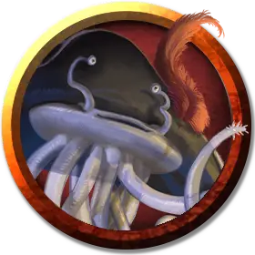

Фламф Блинчик
Flapjack
Маленькая Аберрация, законно-добрая, именной НИП

Класс Доспеха 12
Хиты 7 (2к6)
Скорость 5 футов, летая 30 футов
| мод | спас | ||
|---|---|---|---|
| СИЛ | 6 | −2 | −2 |
| ЛОВ | 15 | +2 | +2 |
| ТЕЛ | 10 | +0 | +0 |
| мод | спас | ||
|---|---|---|---|
| ИНТ | 14 | +2 | +2 |
| МДР | 14 | +2 | +2 |
| ХАР | 11 | +0 | +0 |
Навыки История +4, Магия +4, Религия +4
Уязвимость к урону психическая энергия
Чувства тёмное зрение 60 футов, пассивное Восприятие 12
Языки понимает Подземный, но не может говорить, Телепатия 60 фт.
Опасность 1/8 (25 опыта)
Бонус мастерства +2
Среда обитания Подземье
Особенности
Улучшенная телепатия. Фламф может воспринимать содержание любого телепатического общения, происходящего в пределах 60 футов от него, и не может быть захвачен врасплох существами, обладающими любой формой телепатии.
Беспомощность лёжа. Если фламф сбит с ног, бросьте любую кость. Если выпадет нечет, фламф падает на спину и становится недееспособным. В конце каждого своего хода фламф может совершать спасбросок Ловкости Сл 10, переворачиваясь в случае успеха и переставая быть недееспособным.
Телепатический покров. Фламф обладает иммунитетом ко всем эффектам, чувствующим его эмоции и читающим его мысли, а также всем заклинаниям школы Прорицания.
Действия
Усики. Рукопашная атака оружием: +4 к попаданию, досягаемость 5 футов, одно существо. Попадание: Колющий урон 4 (1к4 + 2) плюс урон кислотой 2 (1к4). В конце каждого своего хода цель должна совершать спасбросок Телосложения Сл 10, получая урон кислотой 2 (1к4) при провале или оканчивая продолжительный урон кислотой при успехе. Заклинание малое восстановление [lesser restoration], наложенное на цель, тоже оканчивает продолжительный урон кислотой.
Вонючие брызги (1/день). Все существа в 15-футовом конусе, исходящем от фламфа, должны преуспеть в спасброске Ловкости Сл 10, иначе будут покрыты дурно пахнущей жидкостью. Обрызганное существо испускает отвратительную вонь 1к4 часа. Обрызганное существо отравлено, пока воняет, а другие существа отравлены, пока находятся в пределах 5 футов от обрызганного существа. Существо может избавиться от вони, потратив короткий отдых на купание в воде, спирте или уксусе.
Использование заклинаний. Базовой характеристикой фламфа является Интеллект (Сл спасброска от заклинаний 12). Он может накладывать следующие заклинания, не нуждаясь в материальных компонентах.
• Неограниченно: волшебная рука [mage hand], малая иллюзия [minor illusion];
• 1/день каждое: волшебная стрела [magic missile], невидимый слуга [unseen servant].
Описание
Пока «Лунная танцовщица» стояла в порту, на её борту оставался один член экипажа — фламф по имени Блинчик, служащий рулевым.